Café Belmont
Matcha bar i kawiarnia specialty na Kazimierzu w Krakowie, kawałek od Placu Nowego. Matcha jest u nas punktem wyjścia, nie dodatkiem do kawy.
Matcha bar na Kazimierzu
Café Belmont to miejsce, w którym dzień zaczyna się od dobrze zrobionej matchy i kawy specialty. Matchę ubijamy na gładką piankę, żeby smak był pełny i słodkawy, a nie gorzki. Do tego proste japońskie jedzenie: onigiri i śniadania do południa.
Więcej o matchy i kawie
Matchę bierzemy od Yume i mamy ją w trzech gatunkach. Yume Asa to wersja na co dzień, łagodna i czysta. Yume Hana jest bardziej wyrazista, z wyższą nutą słodyczy. Yume Hoshi to gatunek ceremonialny, gęsty i intensywny, dla osób które chcą poczuć matchę w pełni. Każdą zrobimy jako matcha latte na gorąco, iced matcha latte albo, po naszemu, matcha tonic z tonikiem i lodem.
Jeśli wolisz kawę, jest pełne specialty: od espresso i flat white po batch brew, cold brew i espresso tonic. Mleko wybierasz sam, także roślinne, Oatly albo Sproud. Latem dochodzą pozycje sezonowe, jak jasmine yuzu honey matcha iced tea czy pina colada iced matcha.
Częste pytania
Gdzie napić się dobrej matchy w Krakowie?
W Café Belmont na Kazimierzu. To matcha bar, w którym matcha Yume jest podstawą menu: matcha latte, iced matcha i matcha tonic.
Jaką matchę parzycie?
Matchę Yume w trzech gatunkach: Yume Asa, Yume Hana i Yume Hoshi, od codziennej po najbardziej wyrazistą.
Gdzie w Krakowie napić się matcha tonic?
Ice matcha tonic jest w stałym menu Café Belmont na Kazimierzu (22 zł).
Czy zjem u Was śniadanie?
Tak, do 12:00 mamy zestawy śniadaniowe: onigiri z kawą (25 zł) lub z matchą (29 zł).
Czy jest mleko roślinne?
Tak, Oatly i Sproud, do każdej matchy i kawy.
Co zamówić na pierwszy raz?
Na start matcha latte na Yume Asa, a jeśli chcesz coś naszego, ice matcha tonic. Do tego onigiri Tuna Mayo albo Sweet Tofu.
Czym różni się matcha latte od matcha tonic?
Matcha latte to matcha z mlekiem, kremowa i łagodna. Matcha tonic to matcha z tonikiem i lodem, lżejsza, gazowana i bardziej orzeźwiająca.
Czy macie kawę specialty?
Tak, całe menu kawowe jest specialty: espresso, cortado, flat white, cappuccino, latte, batch brew, cold brew, drip i espresso tonic.
Czym jest onigiri?
Japońskie trójkąty z ryżu z nadzieniem. Mamy Sweet Tofu, Tuna Mayo i Umeboshi, a do 12:00 wchodzą w zestawy śniadaniowe.
Czy matcha ma dużo kofeiny?
Matcha naturalnie zawiera kofeinę, a razem z nią l-teaninę, dzięki której pobudza łagodniej i równiej niż espresso.
Gdzie jest Café Belmont?
Na Kazimierzu w Krakowie, kawałek od Placu Nowego.
Kazimierz, po naszemu
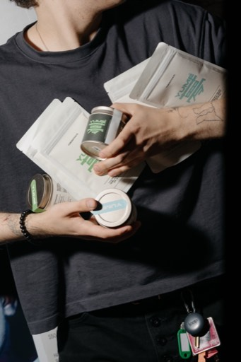
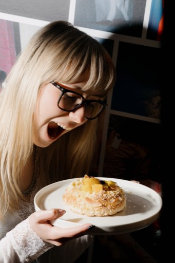
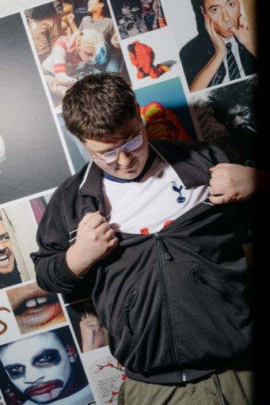
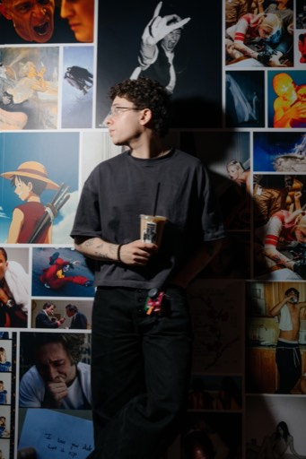
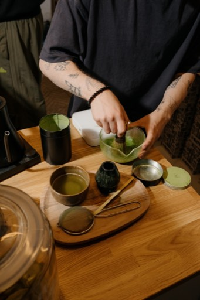
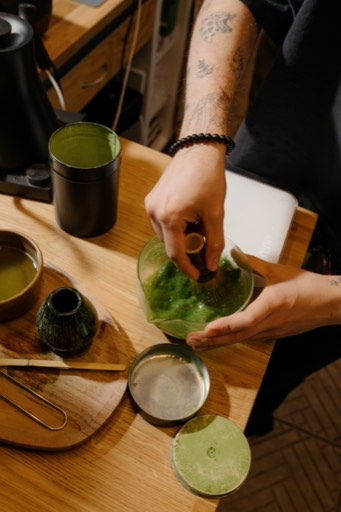
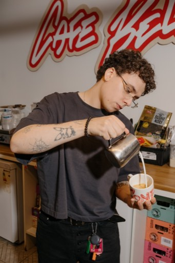
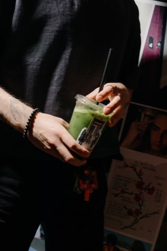
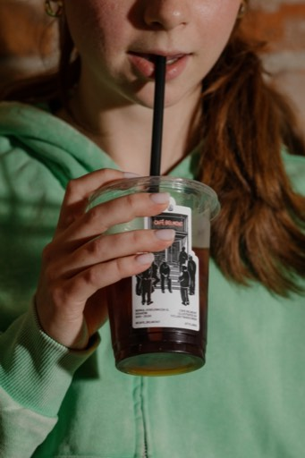
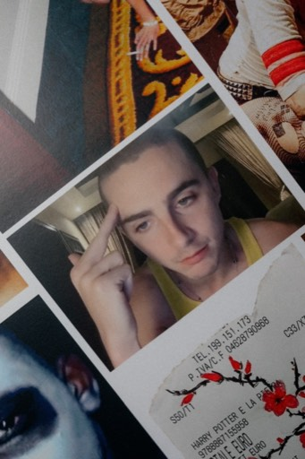
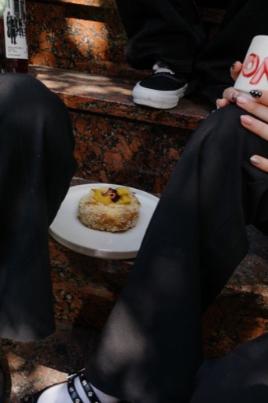
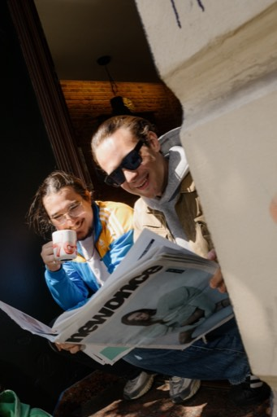
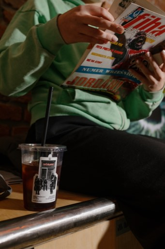
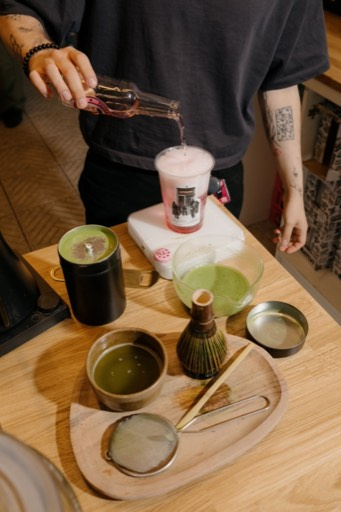
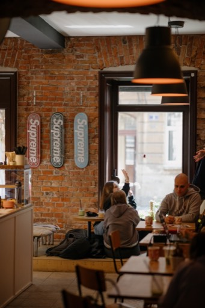
Znajdziesz nas
ul. Berka Joselewicza 12, 31-051 Kraków
Kazimierz, kawałek od Placu Nowego
Pon–Sob 10:00–20:00 · Niedziela 11:00–20:00
@cafe_belmont